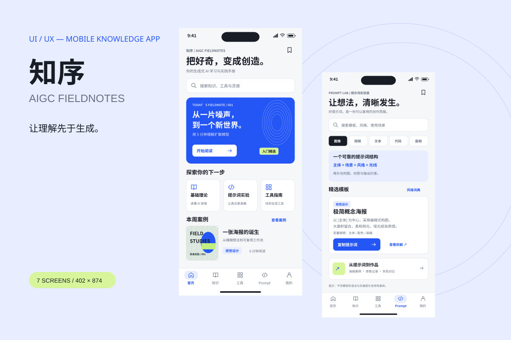
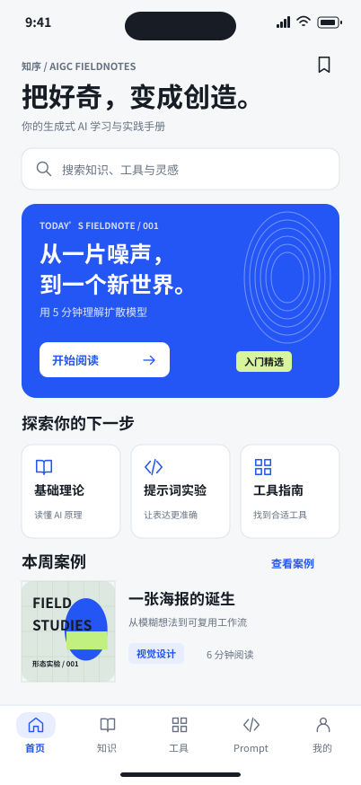
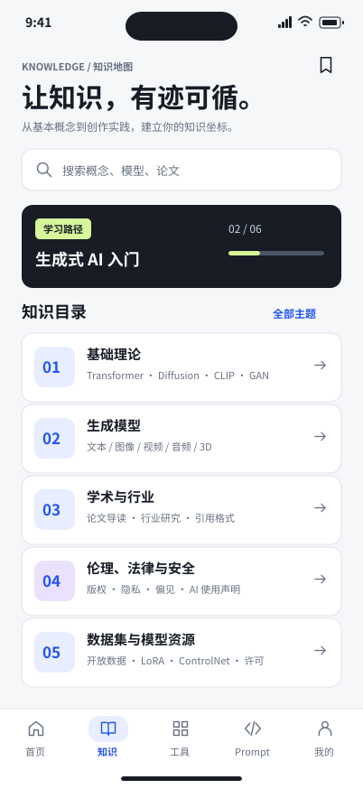
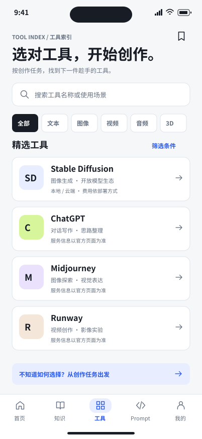
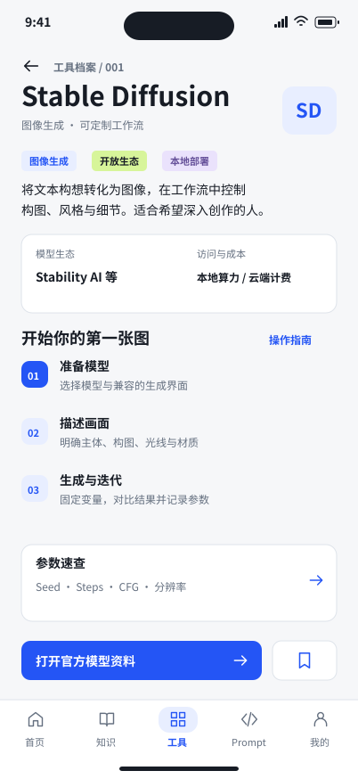
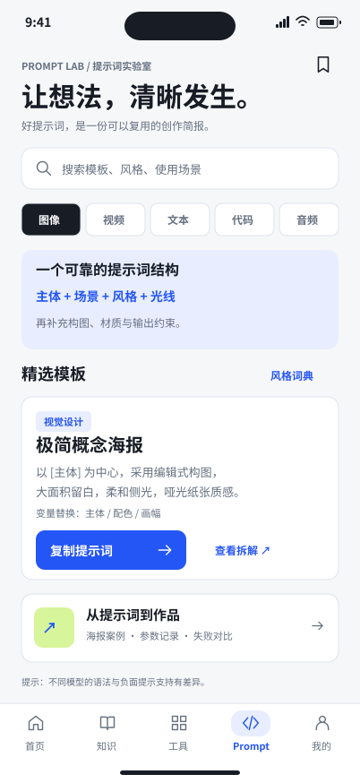
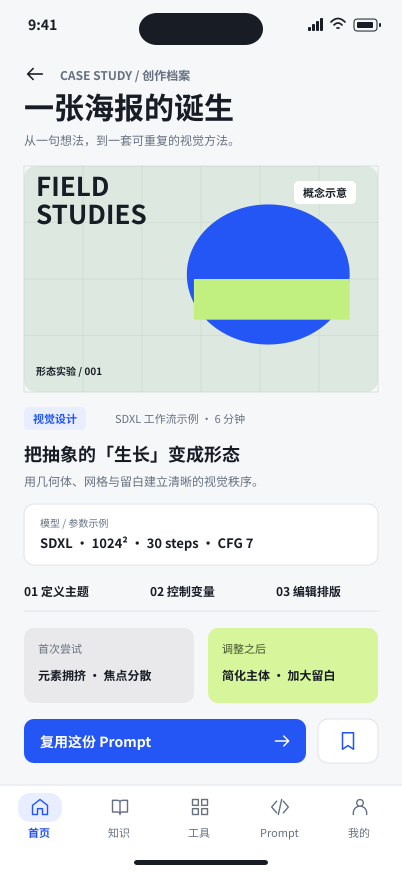
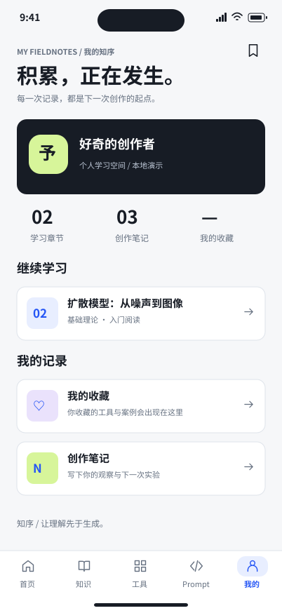

已实现
七页导航、关键词搜索、工具筛选、提示词复制、案例对比，以及保存在浏览器本地的收藏与笔记。
007 / UI & UX DESIGN / 2026
让理解先于生成。
把分散的 AI 知识，组织成一条清晰的创作路径。

课程要求建立一个涵盖理论、工具、提示词、案例、学术、安全与资源的 AIGC 知识库。设计的重点，是让这些内容之间建立联系：读完一个概念之后，能够找到工具、开始实验，并回看自己的记录。
目标用户为设计学习者。这是基于课程任务的设计假设，尚未进行真实用户访谈或可用性研究。
知识库负责理解，工具库负责选择，Prompt 负责行动。“案例”连接方法与结果，“我的”承接收藏和笔记。高频入口留在底栏，详情与案例通过上下文进入。
03 / SCREEN DESIGN
402 × 874 pt / 点击界面可查看大图







浅灰白底支撑长时间阅读；电光蓝标记主要行动；少量绿紫标签帮助区分内容。通过标题字号、编号和卡片间距建立编辑式的信息层级。
30 / 18 / 14标题 · 模块 · 正文
24 pt画板外侧边距
44 pt主要按钮高度
12 pt基础卡片圆角
字体采用中文无衬线体系；搜索框、知识条目、工具卡片、按钮和底栏使用共享样式规则。
七页导航、关键词搜索、工具筛选、提示词复制、案例对比，以及保存在浏览器本地的收藏与笔记。
桌面与 375 px 窄屏布局、搜索到文章、分类结果、收藏与笔记持久化、复制与空状态。浏览器检查未出现页面脚本错误。
首轮视觉检查发现首页海报缩略图文字越界，调整标题字号后重新检查七页画布与窄屏表现。
用真实学习任务验证分类是否清楚，并观察用户从知识到工具、再到提示词的路径；进一步完善原生设计组件与内容来源。
当前是课程概念与前端原型，不包含真实账户、在线生成或实时内容数据库。海报与对比图为原创矢量示意。未进行真实用户测试，不宣称效率提升或商业成果。
EXPLORE THE PROTOTYPE